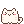
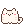

yore.tw
yore.tw
喵，你來啦。
Oh, hello there.
我是這裡看門的貓。Joan 做遊戲，我負責陪你挑一款：想放鬆，就來店裡摸摸貓；想去遠一點的地方，深淵那邊有個故事等著你。找個舒服的位置，慢慢玩吧。
I’m the cat who minds this place. Joan makes the games; I help you pick one. There’s a bakery full of cats if you’d like some company, and a path into the Abyss if you’re feeling curious. Make yourself comfortable.
遊戲
Games

Meowcaron 喵卡龍
拍拍店長，摸摸小貓，招呼來買點心的鄰居。烤箱暖暖的，小幫手又睡著了。
Pat the owner, pet the kittens, and serve a neighbour something sweet. The oven is warm. Someone has fallen asleep again.
遊戲介紹Read more
Souls in Abyss 輪迴無止盡
草原中央有一口井，沒有人敢往下看。你將走過森林、走進深淵，再帶著上一世留下的力量歸來。
There’s a well in the meadow that no one dares look down. Beyond it lie the woods, the Abyss, and another life carrying traces of your last.
遊戲介紹Read more
Planet Wanderer 小星球漫遊
一顆巴掌大的星球，三種畫風隨你切換。還沒有任務，只是來看風景的。
A palm-sized planet you can spin in your hands, rendered three different ways. No quests yet. Just the view.
看看這顆星球Take a look先坐一下也好
Stay a little while
這裡的遊戲都免費，點開就能玩，不用先辦帳號。你可以照顧一會兒小店，也可以陪冒險者走一段路。不知道選哪個的話，先往下摸摸我的頭也行。
The games are free. Just open one and play, with no account to set up. Spend a little time in the bakery, or follow an adventurer down the road. Still deciding? You can give me a pat further down the page.
關於開發者
About the developer

做這些遊戲的人叫 Joan，來自台南，喜歡畫畫。你看到的小貓、點心和冒險，都在這裡慢慢湊成了一個可以走進去玩的地方。我替她守著門，你有空就來。
Joan is the person behind these games. She’s from Tainan, Taiwan, and loves drawing. Here, cats, little treats and adventures come together as places you can spend time in. I keep the door for her. Drop by whenever you like.
多認識她一點A little more about Joan